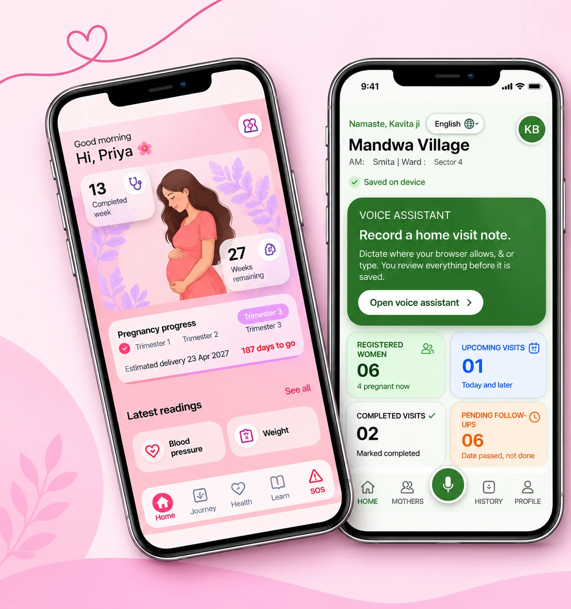
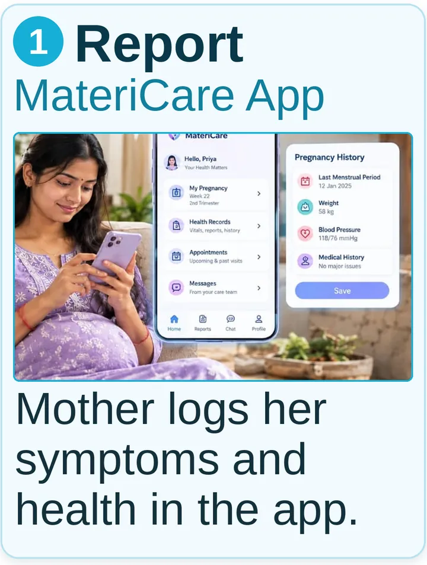
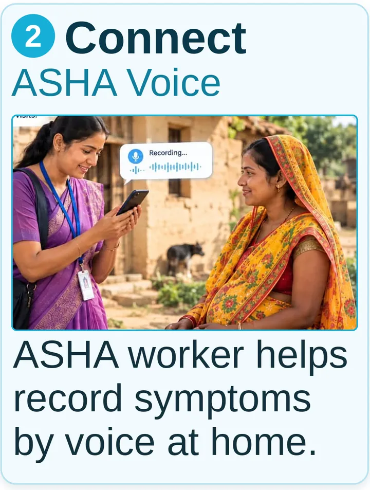
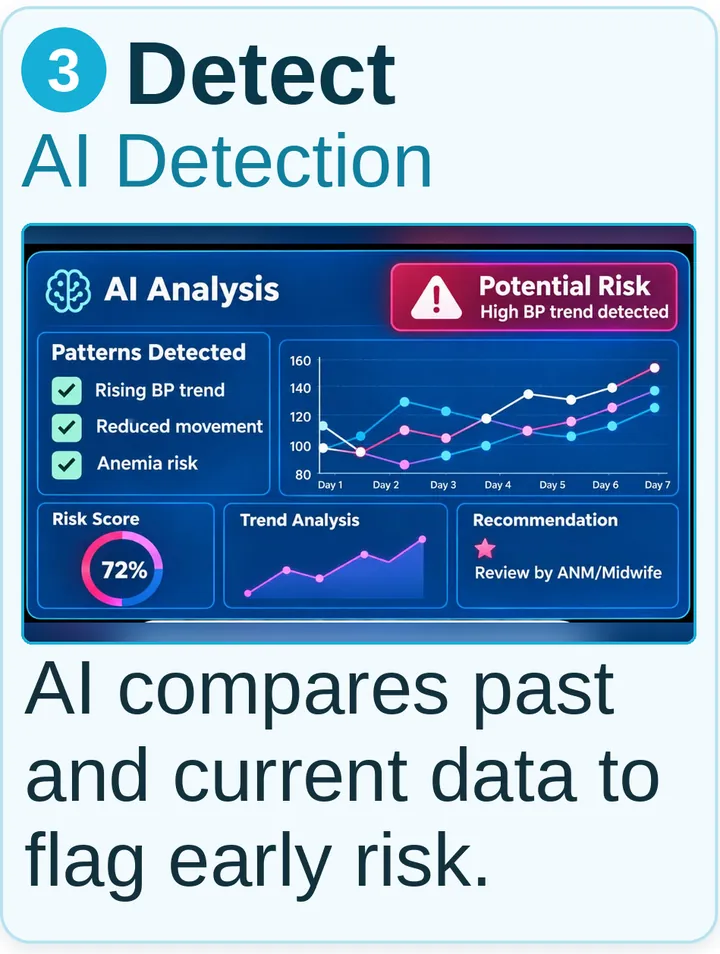
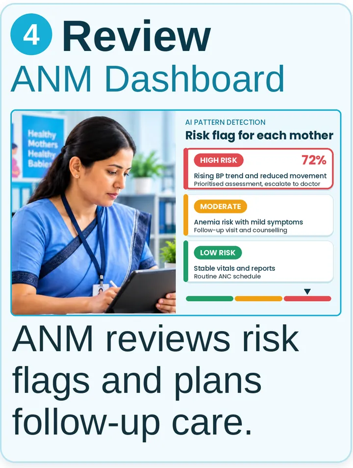
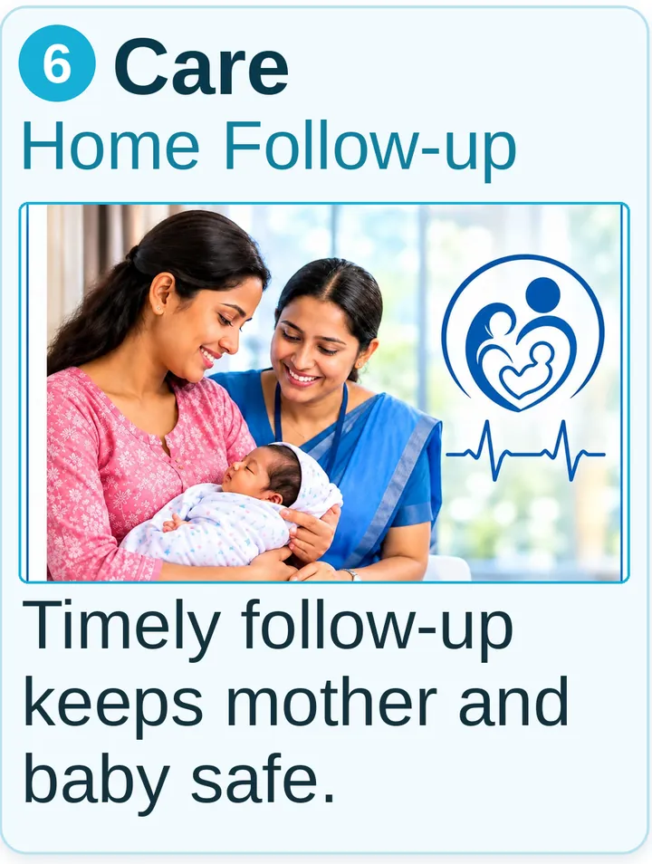

AI-Assisted Maternal Healthcare Service Ecosystem
Reducing preventable maternal and child health risks through continuous care.
Pregnancy care is often a series of separate visits. This project explores a connected service of four digital touchpoints that carries a mother's health information from home visits to the doctor, so that risks can be noticed earlier.

The proposal connects four people in the care journey: the pregnant woman, the ASHA worker, the ANM or midwife, and the doctor. Each gets an interface built for their work, and AI-assisted pattern detection is proposed as a layer that helps healthcare professionals spot changes across visits.
Maternal healthcare is fragmented. Every stakeholder had information, but no one had the complete picture.
Challenges explored in this project
- Maternal and newborn risks still exist
- High-risk pregnancies are identified late
- Women often cannot understand medical reports
- Emotional support is limited
- Care becomes fragmented after each visit
The biggest challenge is not access to healthcare. It is the lack of continuous, connected care.
Fragmented today, connected in the proposal
The wider healthcare context
Global maternal health
- 287,000 maternal deaths annually (WHO, 2020)
- Most maternal deaths are preventable
- SDG target: reduce MMR to under 70 by 2030
- Rural and low-resource settings remain vulnerable
Government initiatives
- PMSMA
- Janani Shishu Suraksha Karyakram (JSSK)
- National Health Mission (NHM)
- WHO and UNICEF Quality of Care Network
Clinical guidelines
- Early pregnancy registration
- Regular ANC check-ups
- Blood pressure, Hb and weight monitoring
- Safe delivery by skilled professionals
- Postpartum and newborn care
AI and emerging technologies
- AI-powered health monitoring
- Medical report interpretation
- Early risk identification
- Pattern detection
- AI chatbots for maternal healthcare
Existing digital solutions
- Flo Health
- Pregnancy+
- BabyCenter
- Pregnancy tracking and reminders
- Health education and community support
Context as compiled in the project from WHO, government programmes, clinical guidelines and existing apps. Early risk identification and coordinated care can significantly improve maternal and newborn health outcomes.
Every stakeholder contributes to a mother's journey
Maternal healthcare succeeds when every stakeholder works together. The diagram below is from the project; tap it to enlarge.
- ASHAFrontline health worker and strong link between community and health system.
- DoctorDiagnoses, monitors complications and provides medical treatment.
- FamilyProvides emotional support and helps in decision making and care at home.
- ANMProvides basic maternal care, health check-ups, and guidance during pregnancy.
- CommunityCreates awareness, offers support and builds a healthy environment for mothers.
- GovernmentSets policies, provides resources and ensures access to maternal healthcare services.
- AI platform ProposedAnalyzes data, predicts risks and provides real-time insights for better decision making.
Stakeholder needs and challenges
| Stakeholder | Needs | Pain points | Goals |
|---|---|---|---|
| Pregnant woman | Timely antenatal care, health education, nutrition guidance | Delayed check-ups, lack of awareness, transportation issues | Safe pregnancy, healthy baby, stress-free maternal care |
| Family | Reliable information, affordable healthcare, support for mother | Limited knowledge, financial burden, emergency decision-making | Ensure the mother's and baby's wellbeing |
| ASHA worker | Digital tools, training, community support, easy record management | Heavy workload, paper-based documentation, delayed follow-ups | Track pregnancies, improve community healthcare, ensure regular ANC visits |
| ANM (Auxiliary Nurse Midwife) | Accurate patient records, diagnostic support, efficient reporting | High patient load, manual data entry, shortage of staff and equipment | Deliver quality maternal healthcare and reduce complications |
| Doctor / Gynecologist | Complete patient history, diagnostic insights, timely referrals | Incomplete medical records, late patient visits, limited consultation time | Early diagnosis, better treatment decisions |
| Government | Accurate healthcare data, improved maternal outcomes | Data inconsistencies, delayed reporting, resource allocation challenges | Reduce maternal mortality, improve healthcare coverage |
Every stakeholder has different responsibilities but the same goal: a healthy mother and baby.
Four people, one fragmented picture
Personas as documented in the project from field research. The pregnant woman persona is unnamed in the source.
Pregnant woman
- Age
- 27 to 34
- Occupation
- Homemaker / working woman
- Location
- Rural and semi-urban Madhya Pradesh
Challenges and needs
- Difficulty understanding medical reports and ultrasound findings
- Fear and anxiety due to previous pregnancy complications or miscarriage
- Limited awareness of warning signs and high-risk symptoms
- Emotional stress and lack of continuous support
- Existing pregnancy apps provide reminders but lack personalized guidance and report explanations
Sunita Verma
- Age
- 38 years
- Experience
- 12+ years
- Location
- Rural community, Madhya Pradesh
Challenges and needs
- Covers a large number of households across villages
- Relies on manual records and repeated documentation
- Difficulty tracking every woman's health history over time
- Poor internet connectivity during field visits
- Limited time for counselling and health education
- Women sometimes miss follow-up visits or ignore warning signs
Snehkata Vishwakarma
- Age
- 42 years
- Experience
- Working since 2007 (18+ years)
- Location
- Rural Primary Health Centre, Madhya Pradesh
Challenges and needs
- Managing a large number of pregnant women across multiple villages
- Reviewing scattered paper records and incomplete medical histories
- High-risk cases are sometimes identified too late
- Limited consultation time due to heavy workload
- Delays in communication between pregnant women, ASHA workers, and doctors
Dr. Rahul Sharma
- Age
- 45 years
- Experience
- 18+ years
- Location
- District Hospital, Madhya Pradesh
Challenges and needs
- Patients are often referred when complications have already progressed
- Receives incomplete or scattered medical histories
- Limited consultation time due to high patient volume
- Difficult to review months of reports during a short appointment
- Delays in communication between community healthcare workers and hospitals
- High-risk cases are not always prioritized early
A human-centred process, ecosystem first
Activities as listed in the project's process map. The service was designed only after understanding the complete ecosystem.
See the activities in each stage
1. Project kickoff and scope definition
Frames the domain and what the project covers.
- Domain familiarization
- Maternal healthcare ecosystem
- Government healthcare services
- Project brief
- AI-assisted maternal care ecosystem
- Research scope
- Pre-pregnancy to child care
- Stakeholders and healthcare journey
2. Existing service and user research
As-is: how care works today.
- Current maternal healthcare process
- Existing pregnancy apps
- Stakeholder study: pregnant women, family, ASHA, ANM, doctor, government
- Research: primary interviews, secondary research, WHO and government reports
3. Insights mapping and problem framing
As-is: making sense of what was found.
- Service mapping
- Stakeholder ecosystem
- Personas
- Empathy map
- Customer journey
- Current service blueprint
- Gap analysis
- Service gaps, pain points, opportunity areas
- Problem statement: continuous maternal care and early risk detection
4. Ideation and service concept detailing
To-be: imagining the connected service.
- User scenarios
- Future service journey
- Ideation and brainstorming
- AI-assisted concepts
- Concept development
- Service ecosystem
- Feature prioritization
5. Service prototype and validation
To-be: making the concept tangible.
- Prototype: Pregnant Woman App, ASHA Voice Assistant, ANM Dashboard, Doctor Dashboard
- Validation: user testing, workflow validation, experience evaluation
6. Service specifications
Documenting the proposed service.
- To-be service
- Service blueprint
- AI workflow
- Stakeholder integration
- Final deliverables
- Connected service ecosystem
- Functional prototypes
- Implementation roadmap
Stages two to five form an iterative loop in the project's process map.
From planning a pregnancy to caring for a child
The current journey, mapped stage by stage. Care is fragmented, causing important health information to be lost over time.
Pre-pregnancy
- Mother's actions
- Plans pregnancy, seeks advice, health check-up
- Touchpoints
- Family, ASHA, PHC
- Emotions
- Hopeful, curious
- Pain points
- Limited awareness, no structured guidance
- Opportunities
- Health education, pre-pregnancy screening
Pregnancy registration
- Mother's actions
- Registers pregnancy, receives Mother Card
- Touchpoints
- ASHA, ANM, PHC
- Emotions
- Confident
- Pain points
- Paper-based records, repeated documentation
- Opportunities
- Digital registration and centralized records
Antenatal check-ups (ANC)
- Mother's actions
- Attends routine check-ups, blood tests, ultrasounds
- Touchpoints
- ANM, Doctor, Hospital
- Emotions
- Reassured but anxious
- Pain points
- Missed appointments, difficulty understanding reports
- Opportunities
- Appointment reminders and simplified report
Pregnancy monitoring
- Mother's actions
- Takes medicines, follows nutrition advice, tracks symptoms
- Touchpoints
- ASHA, ANM, Family
- Emotions
- Concerned
- Pain points
- No continuous monitoring, scattered health data
- Opportunities
- AI-assisted health tracking and personalized reminders
High-risk pregnancy
- Mother's actions
- Additional tests, referrals, specialist consultations
- Touchpoints
- ANM, Doctor, District Hospital
- Emotions
- Fear, stress
- Pain points
- Delayed risk identification, fragmented communication
- Opportunities
- Early AI risk detection and coordinated referrals
Delivery
- Mother's actions
- Hospital admission, childbirth
- Touchpoints
- Hospital, Doctor, Nurse
- Emotions
- Hopeful, nervous
- Pain points
- Emergency referrals, incomplete medical history
- Opportunities
- Complete digital pregnancy timeline
Postpartum care
- Mother's actions
- Recovery, breastfeeding, follow-up visits
- Touchpoints
- ASHA, ANM, PHC
- Emotions
- Exhausted
- Pain points
- Mother's health receives less attention after delivery
- Opportunities
- Continuous postnatal care and mental health support
Child care
- Mother's actions
- Vaccinations, growth monitoring, nutrition
- Touchpoints
- ASHA, ANM, PHC
- Emotions
- Happy, responsible
- Pain points
- Missed vaccinations, scattered child health records
- Opportunities
- Digital child health records and vaccination reminders
Scroll sideways to follow the journey. The opportunities shown here are those identified in the project's current-state journey map.
The challenge is continuity, not simply diagnosis
- CoreSafe mother, healthy baby.
- BasicANC, reminders, SOS and communication.
- ExpectedHealth timeline, AI summary and report explanation.
- AugmentedAI alerts, voice assistant and emotional support.
- TransformationalA connected AI healthcare ecosystem.
The goal is not another pregnancy app. It is a continuous care ecosystem.
Visualizing the complete healthcare service
The project's blueprint, shown as drawn. Choose a layer to highlight it, or open the full-size view.
Scroll sideways on small screens. Some cells are clipped in the source file; a clean export would give the full wording.
Every healthcare interaction contributes to one continuous care journey.
Four connected digital touchpoints
Continuous monitoring, AI-assisted risk detection and coordinated maternal care, one interface for each person in the care team.
MateriCare App
Lets a pregnant woman see pregnancy information, follow her journey, upload reports and keep her health information together.
- Appointment booking
- Notifications
- Digital reports
- Health dashboard
ASHA Voice Assistant App
Supports women during community visits: records information by voice and helps pass relevant maternal health information to the healthcare team.
- Home visit app
- Offline data collection
- Referral system
- Visit scheduling
ANM / Midwife Dashboard
Aarogya Setu Midwife. Lets an ANM review maternal health information, follow up on patients and coordinate care.
- Maternal case dashboard
- Vaccination updates
- Health records
- Referral tracking
- AI pattern detection
- AI risk alerts
Doctor Dashboard
Lets a doctor review patient histories and clinical information, using proposed summaries and pattern indicators to support assessment.
- Electronic medical records
- AI risk alerts
- Remote consultation
- Patient timeline
Timely intervention → Continuous monitoring → Healthy mother and healthy baby
Features are those listed in the project. Prototype links open the interactive demos hosted by the designer.
From a logged symptom to timely care
Six steps showing how the ecosystem is imagined to work, from the mother’s app to home follow-up. Tap any step to enlarge it.





Storyboard poster from the project. A conceptual scenario, not a deployed system.
The actual interfaces, up close
Original screens from the project. Tap or click any screen to enlarge it.
MateriCare App
Calm, soft and readable: health readings, a daily check-in, a journey view, learning content in text and audio, and an SOS screen.
Pregnancy progress, weeks completed and latest readings.
ASHA Voice Assistant App
Built for home visits: a large microphone, a women directory, registration, a visit schedule and shareable summaries.
Voice assistant entry point, registered women, upcoming visits and follow-ups.
Aarogya Setu Midwife
A caseload dashboard with priority labels, patient records, village comparisons and a plain-language assistant.
Caseload at a glance: pregnant women, moderate and high-priority patients, urgent cases, today's ANC visits, home visits and vaccinations due, with risk distribution and ANC vs vaccination coverage by village.
Prototype screens use synthetic, fictional patient data. Tap the centre screen to enlarge it.
Doctor Dashboard
A clinical workspace: referrals, patient timelines, AI summaries and detected patterns for review.
High-risk cases, pending reviews and appointments, with a patient in focus, a referral queue and detected patterns.
Prototype screens use synthetic, fictional patient data. Tap the centre screen to enlarge it.
How information would move through the system
A conceptual workflow from the project. It supports healthcare professionals and does not diagnose patients or replace them.
BP, haemoglobin, weight, symptoms, reports, medicines, baby movement, mood and ANC history, captured through the MateriCare app (self-monitoring) and the ASHA voice assistant (home visits).
Collected information goes to a secure health database that both apps and both dashboards would share.
The ASHA voice assistant would turn speech into text that the worker reviews and edits (NLP).
The prototype screen says "Speech to text, then you review".OCR would read uploaded medical reports so values can join the record.
In the prototype, "AI explanations are not connected" and reports are never scored.Time-series analysis would compare previous and current records.
Rule-based clinical guidelines would be used to interpret the data.
The prototype dashboards show rule-based patterns on synthetic data.Looks for declining haemoglobin, abnormal BP changes, weight progression and symptom combinations. The project also names a maternal risk score and machine-learning risk prediction.
Not implemented or clinically validated.An AI health summary would show low, moderate or high risk with recommended follow-up. ANM and doctor review it, then care and follow-up continue and new data is re-evaluated.
Clinical decisions stay with healthcare professionals.What experts said about the concept
Feedback themes from expert interviews and prototype review, as summarised in the project. This is not clinical validation.
Dr. Anupama Sathe
Medicity Hospital, Kharghar, Mumbai · Age 54
Dr. Seema Mehere
HOD, YMY Ayurvedic Medical College, Kharghar, Mumbai · Age 61
Kajal Sharma
YMY Ayurvedic Medical College, Kharghar, Mumbai · Age 35
Bridges gaps in maternal health data.
Identifies potential health risks.
Inclusive features received positive feedback.
Potential to support mothers and doctors.
Themes are shown as a group. The project does not attribute individual quotes, so none are shown.
Information shaped for each person's needs
Design choices that can be seen in the screens. They are intentions, not a compliance claim.
- Status is written, not only coloured. Priority labels read Danger, Severe or Moderate, next to an icon and a code.
- Readable hierarchy. Dashboards open with a plain summary of what needs attention, then details.
- Clear navigation and labels. Icons in the apps carry text labels in the bottom navigation.
- Information for different roles. Mothers see simple readings and reminders; ANMs and doctors see trends, records and priorities.
From reactive to preventive care
- Better continuity of maternal health information
- Easier access to relevant information for healthcare workers
- More structured patient-history review
- Support for timely follow-up
- Improved coordination between community-level and clinical care
Compare reactive and preventive care in detail
| Reactive care (current) | Preventive care (proposed) |
|---|---|
| Treatment after complications occur | Early identification of health risks |
| Fragmented health records | Continuous digital health history |
| Missed warning signs | AI-powered pattern detection |
| Irregular follow-up | Continuous monitoring and reminders |
| Manual communication | Connected ASHA–ANM–Doctor ecosystem |
| Late clinical intervention | Timely alerts and early intervention |
| Limited report understanding | Simplified health insights |
| Higher maternal and newborn risks | Improved maternal and newborn outcomes |
These are the intended benefits of the proposed design. They are not measured outcomes, and the AI capabilities described are conceptual.
How the four touchpoints connect
Maternal healthcare is a continuous journey, not a single hospital visit.
Saving lives before danger comes.